class: center, middle # EE-464 STATIC POWER CONVERSION-II # Other PWM Techniques ## Ozan Keysan ## [keysan.me](http://keysan.me) ### Office: C-113 <span class="meta">•</span> Tel: 210 7586 --- # Hysteresis (Bang-Bang) PWM -- ## You already implemented in the first semester 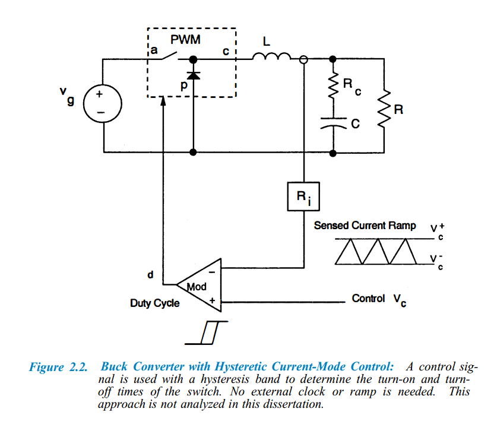 --- # Hysteresis (Bang-Bang) PWM -- ## If your current is higher than your reference, reduce the current (switch off), if not increase the current (Switch ON) --- # Hysteresis (Bang-Bang) PWM -- ## Change your refeence current to a sinusoidal waveform 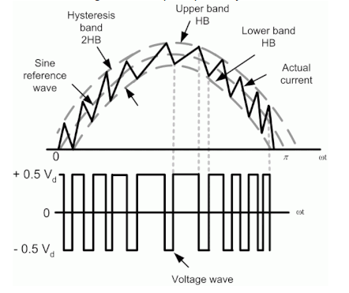 --- # Hysteresis (Bang-Bang) PWM -- - ## The switching frequency is varying -- - ## Difficult to design filter (because of varying fs) -- - ## Can induce side-band harmonics -- - ## Simple control and implementation --- # 3-Phase Two-Level Inverter 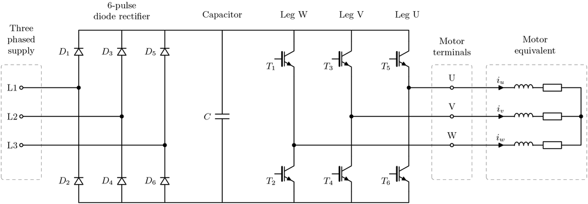 ### Anti-parallel diodes are not shown. --- # 3-Phase Two-Level Inverter 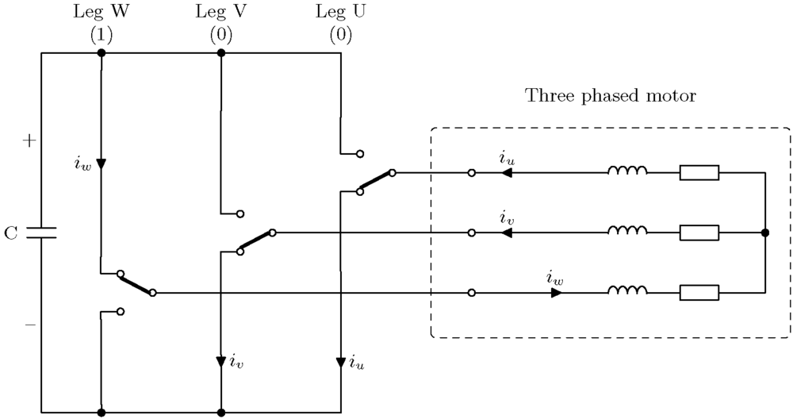 ## Each leg has two positions: -- top switch closed (1) --- # 3-Phase Two-Level Inverter ## Each leg has two positions: -- bottom switch closed (0) --- # [Voltage Vectors](https://www.switchcraft.org/learning/2017/3/15/space-vector-pwm-intro) -- <img src="./images/ee464/voltage_vectors.png" alt="Drawing" style="width: 600px;"> --- ### 000 - \\(v_0\\) (zero vector) ### 001 - \\(v_1\\) (Phase +U) ### 010 - \\(v_2\\) (Phase +V) ### 011 - \\(v_3\\) (Phase -W) ### 100 - \\(v_4\\) (Phase +W) ### 101 - \\(v_5\\) (Phase -V) ### 110 - \\(v_6\\) (Phase -U) ### 111 - \\(v_7\\) (zero vector) --- # Voltage Vectors: V0 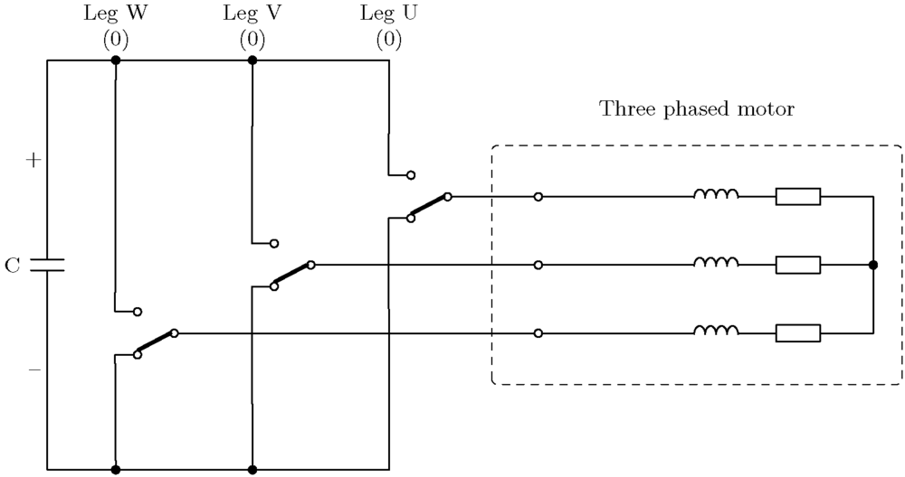 --- # Voltage Vectors: V1 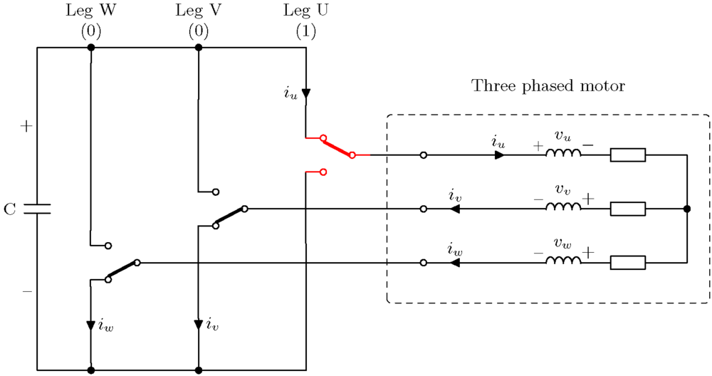 --- # Voltage Vectors: V2 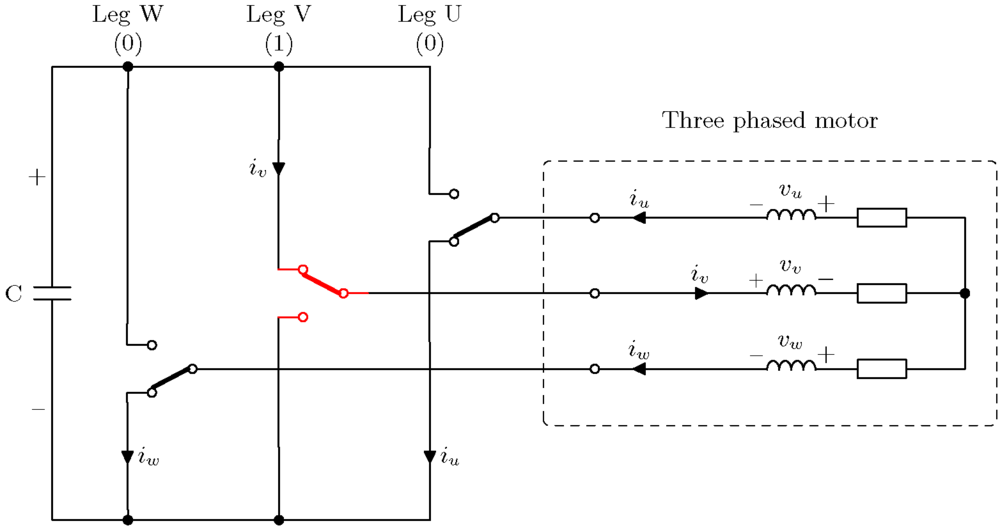 --- # Voltage Vectors: V3 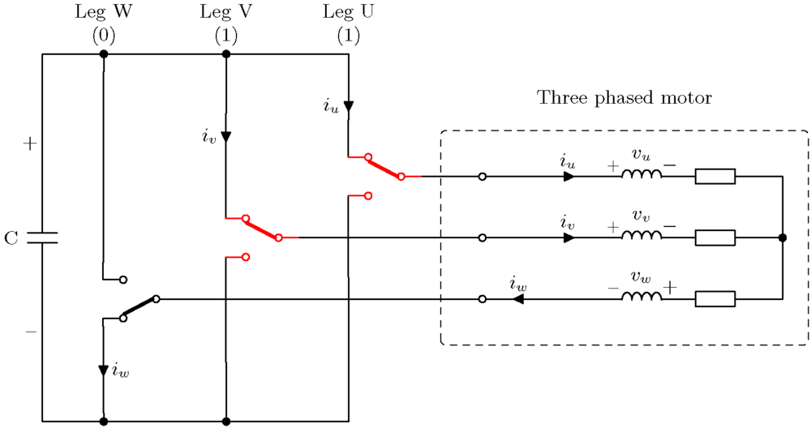 --- # Voltage Vectors: V4 <img src="./images/ee464/v4.png" alt="Drawing" style="width: 750px;"> --- # Voltage Vectors: V5 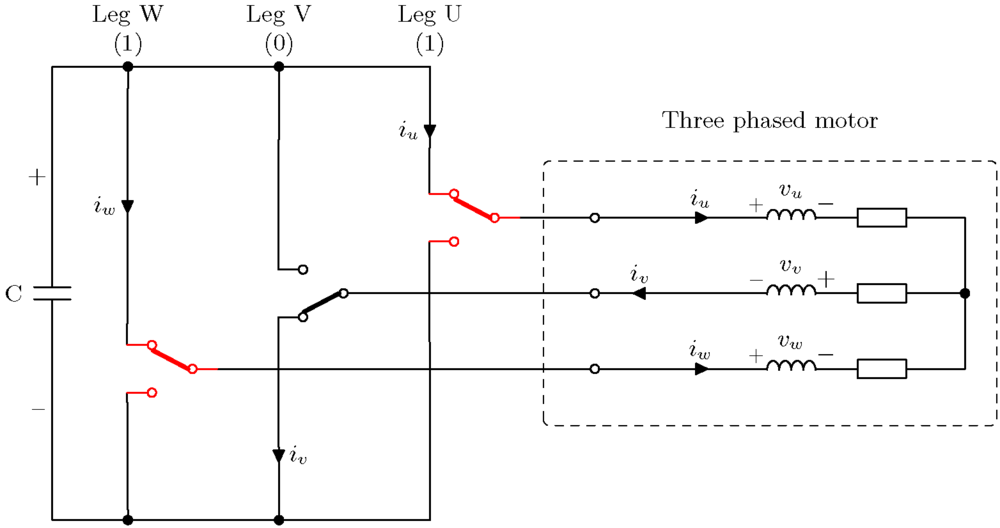 --- # Voltage Vectors: V6 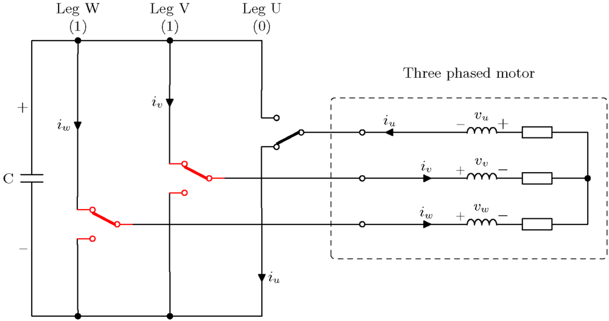 --- # Voltage Vectors: V7 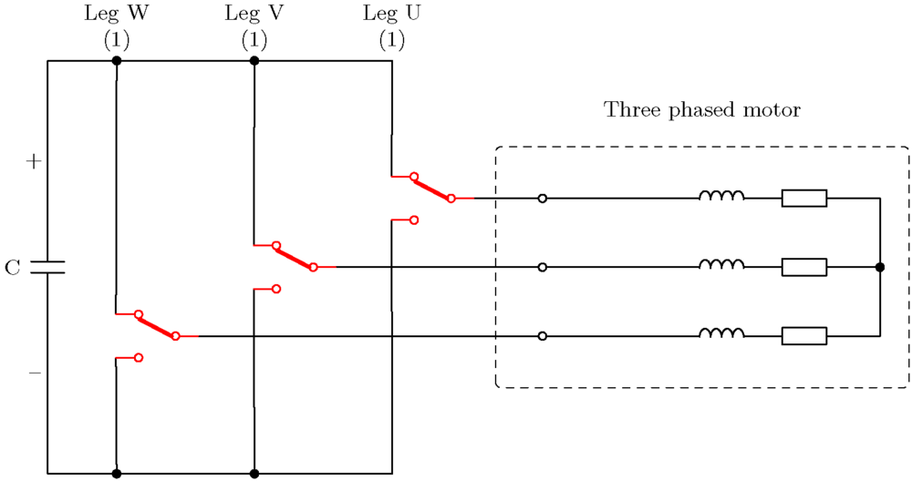 --- # Square Wave Operation <img src="https://media.giphy.com/media/aFdKsSmSHbLtC/giphy.gif" alt="Drawing" style="width: 800px;"> ### [BLDC Drive with square wave](https://www.youtube.com/watch?v=IiY01xIKg28) --- ## What about the vectors in between? -- <img src="./images/rotating_mmf_sine.gif" alt="Drawing" style="width: 750px;"> --- ## What about the vectors in between? 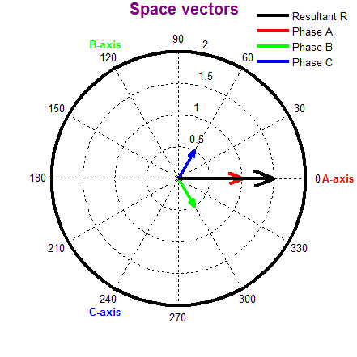 --- ## What about the vectors in between? <img src="./images/rotating_mmf_phasor2.gif" alt="Drawing" style="width: 800px;"> --- # Voltage Synthesizing <img src="https://static1.squarespace.com/static/584729023e00bebf8abd6ba0/t/58fea6c8ebbd1a25ce89c905/1494287982183/Basic-Vectors-with-reference.png?format=500w" alt="Drawing" style="width: 500px;"/> --- # Voltage Synthesizing <img src="https://static1.squarespace.com/static/584729023e00bebf8abd6ba0/58fea923197aea4f7f28f61a/58fea9286a49632401d63e94/1493084598485/SVPWM-1.png?format=1000w" alt="Drawing" style="width: 700px;"/> --- # PWM Generation <img src="https://static1.squarespace.com/static/584729023e00bebf8abd6ba0/t/59110ff0ebbd1a1c7143886d/1494290426838/?format=1000w" alt="Drawing" style="width: 700px;"/> --- # PWM Generation <img src="https://static1.squarespace.com/static/584729023e00bebf8abd6ba0/t/59111028c534a5947d523098/1494290481944/?format=1000w" alt="Drawing" style="width: 550px;"/> ### Switching Sequence: 000-001-011-111 --- # PWM Generation ## Switching Sequence: - ## Zero Vector (000) -- - ## Basic Vector (i.e. 001) -- - ## Basic Vector (i.e. 011) -- - ## Zero Vector (i.e. 111) -- ## Only one switch position is changed at each step! --- # PWM Generation <img src="https://static1.squarespace.com/static/584729023e00bebf8abd6ba0/t/58feacf5d482e9da38497463/1493085606567/?format=1000w" alt="Drawing" style="width: 700px;"/> --- ## SPWM vs SVPWM -- 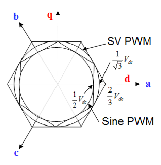 #### Phase Voltages --- ## SPWM vs SVPWM -- - ## Space Vector PWM generates less harmonic distortion -- - ## Space Vector PWM utilizes input voltage more \\(1/2\\) vs \\(1/\sqrt{3}\\) --- ## How to aim to a moving target? -- <img src="https://i0.wp.com/familywings.org/wp-content/uploads/2012/01/donkey-and-carrot.jpg?resize=300%2C224" alt="Drawing" style="width: 600px;"> --- # Some Useful Mathematical Tools -- - ## Clarke Transformation - ## Park Transformation --- # [Clarke](https://en.wikipedia.org/wiki/Edith_Clarke) Transformation ## (a-b-c) to \\(\alpha \beta \\) Transformation ## From three-phase to two orthogonal phase transformation -- ### Main Idea: In a balanced three-phase system, \\(I_a + I_b + I_c =0\\) so there is redundant information and system can be reduced to two variables. --- ##How do you define the resultant (black) phasor? <img src="./images/rotating_mmf_phasor2.gif" alt="Drawing" style="width: 800px;"> --- # Clarke Transformation <img src="https://www.keil.com/pack/doc/CMSIS/DSP/html/clarke.gif" alt="Drawing" style="width: 600px;"/> --- # Clarke Transformation <img src="https://wikimedia.org/api/rest_v1/media/math/render/svg/36e05ba56ec15de753eb9f3c60983bc874e31370" alt="Drawing" style="width: 750px;"/> --- # Park Transformation -- ## From stationary frame to rotationary frame -- ## Instead of dealing with sinusoidal signals, just use the magnitudes. -- ## When reconstructing signals use the rotor position information --- # Park Transformation <img src="https://static1.squarespace.com/static/584729023e00bebf8abd6ba0/t/58664f0f2994ca78b5145f29/1483099927549/?format=750w" alt="Drawing" style="width: 750px;"/> --- # Park Transformation -- 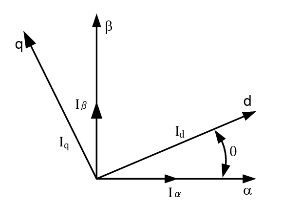 -- ## \\(I\_d = I\_\alpha cos(\theta) + I\_\beta sin (\theta)\\) -- ## \\(I\_q = I\_\beta cos(\theta) - I\_\alpha sin (\theta)\\) -- --- ## Reference Frames 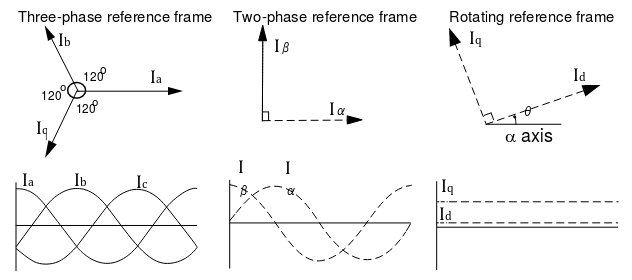 --- ## Clarke and Park Transformations <img src="https://static1.squarespace.com/static/584729023e00bebf8abd6ba0/t/5866535e414fb5c4d35ed4cb/1483101083243/ClarkePark_Animation?format=500w" alt="Drawing" style="width: 500px;"/> --- # Torque and Flux Control -- # Id: Proportional to flux in the airgap -- # Iq: Proportional to torque generated --- # Inverse Transforms -- ## Required to apply reference voltage and current waveforms (sinusoidals) -- - ## Inverse Park Transform - ## Inverse Clarke Transform --- # Inverse Park Transform -- ## From rotation frame to stationary frame -- ## \\(I\_\alpha = I\_d cos(\theta) - I\_q sin (\theta)\\) -- ## \\(I\_\beta = I\_q cos(\theta) + I\_d sin (\theta)\\) --- ## Inverse Clarke Transform ### From two-axis orthogonal plane to 3-phase stationary frame. <img src="http://e2e.ti.com/cfs-file/__key/communityserver-discussions-components-files/171/3750._F764D653_.JPG" alt="Drawing" style="width: 500px;"/> --- ## Whole Workflow <img src="https://static1.squarespace.com/static/584729023e00bebf8abd6ba0/t/58c88acd579fb3efb64797c9/1489537751460/?format=1000w" alt="Drawing" style="width: 750px;"/> --- # Classical Vector Control Diagram <img src="http://3l4sbp4ao2771ln0f54chhvm.wpengine.netdna-cdn.com/wp-content/uploads/2016/07/Vector-Block-Diagram.gif" alt="Drawing" style="width: 600px;"/> --- # Vector Control in PMSM <img src="http://www.mdpi.com/sensors/sensors-17-00973/article_deploy/html/images/sensors-17-00973-g007.png" alt="Drawing" style="width: 750px;"/> --- # Vector Control in Induction Motors <img src="https://www.mathworks.com/help/physmod/sps/powersys/ug/electric_drives223.gif" alt="Drawing" style="width: 600px;"/> --- # Further Reading ### [Vector Control for Dummies](https://www.switchcraft.org/learning/2016/12/16/vector-control-for-dummies) ### [What is Field Oriented Control?](https://www.eetimes.com/document.asp?doc_id=1279321) ### [Field Oriented Control](https://mycourses.aalto.fi/pluginfile.php/155905/mod_resource/content/4/Lecture10.pdf) ### [Field Oriented Control of AC Motors](http://www.ti.com/lit/an/bpra073/bpra073.pdf) ### [Sensorless PMSM Field Oriented Control](http://cache.nxp.com/assets/documents/data/en/reference-manuals/DRM148.pdf) ### [Space Vector PWM](https://www.switchcraft.org/learning/2017/3/15/space-vector-pwm-intro) --- # Third Harmonic Injection # a.k.a THIPWM -- <img src="https://static1.squarespace.com/static/584729023e00bebf8abd6ba0/t/590687ddff7c50866d9f4f1d/1493600229378/?format=1000w" alt="Drawing" style="width: 800px;"/> --- # Third Harmonic Injection <img src="https://static1.squarespace.com/static/584729023e00bebf8abd6ba0/t/59068b67725e256add1f37f5/1493601135313/?format=1000w" alt="Drawing" style="width: 800px;"/> --- # Third Harmonic Injection <img src="https://static1.squarespace.com/static/584729023e00bebf8abd6ba0/t/59068e15e6f2e142b4adbe4f/1493601820281/?format=1000w" alt="Drawing" style="width: 800px;"/> --- # Third Harmonic Injection <img src="https://static1.squarespace.com/static/584729023e00bebf8abd6ba0/t/590691aed1758ec4d7664141/1493602742473/ThirdHarmonics.png?format=500w" alt="Drawing" style="width: 600px;"/> --- # Third Harmonic Injection <img src="https://static1.squarespace.com/static/584729023e00bebf8abd6ba0/t/590691aed1758ec4d7664141/1493602742473/ThirdHarmonics.png?format=500w" alt="Drawing" style="width: 600px;"/> --- # Third Harmonic Injection 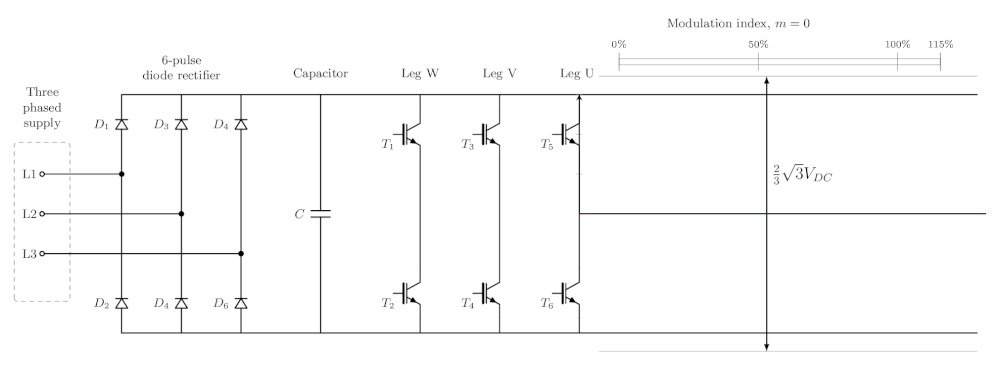 --- ## You can download this presentation from: [keysan.me/ee464](http://keysan.me/ee464)